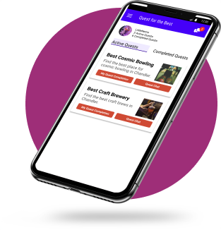

Quest for the Best
Motivating users to get out of the house and have adventures!
This was a school assignment and it was a one week solo project.
The premise - Quest for the Best is a mobile app that encourages people to get out more by having them create a “Quest” and a group of their friends can choose to participate in the quest by going to activities/events/restaurants and rating their experience.
The problem - my goal was to create an in-app chat for the project, as well as a way to document past quests.
How might we use a chat feature to improve the experience of this app?
Insights - I wanted to know why someone would want to use an in-app chat feature rather than communicating through existing channels. My conclusion, based on input from the Stakeholder Interview and Competitive Analysis, was that it would be a chat that is specifically created for the quest and would be a great way to coordinate outings with friends who are also completing the quest. So I decided to design the chats as quest specific chat rooms.
Ideation


With only a week to implement the feature, I spent the first day brainstorming and planning. I wanted to focus on answering the question of how to enrich the Quest experience with the chat feature. Once I had a storyboard, I was ready to move on to Wireframing!
User Testing with Low Fidelity Prototype
One of the challenges of conducting a solo UX project is finding willing participants for user testing! I was able to recruite 11 people by soliciting to classmates, friends and family to do a quick usability study. I used a "first click" test on my early wireframes to verify that users found it intuitive to navigate the chat feature. With a whopping 90% success rate, I felt confident in the design, and moved on to creating a High Fidelity mockup.
Design System and High Fidelity Prototype
In order to choose the color palette, I revisited color theory. This app should be fun and exciting, and I found the colors that signify fun (yellows and oranges) and novelty (purple) would be good for this app. I used the tool at colorizer.org to find a complementary pair. I started out using a shade of yellow with purple, but did not like how it looked. So I played with the purple shade and found a complementary orange color that looked appealing and used those to create the color palette.

Using atomic design theory I set about creating reusable components and set up a high fidelity prototype in figma, which could be used in live user testing.

Verifying Results
I completed live user testing with two people. I had users attempt these tasks - locating the chats, finding new messages, and looking at completed quests. They had no problems accomplishing these tasks and expressed that they would enjoy an app like this!
Having validated my design choices with user testing, I went back to carefully cleaning up the design adjusting margins to make sure things lined up well. Here is the final product!
Reflection
This quick solo project was a great experience, allowing me to gain confidence in my UX process and UI skills. Through user research, I found that an app like "Quest for the Best" would find significant market demand. I would enjoy working on the full app to meet that demand!